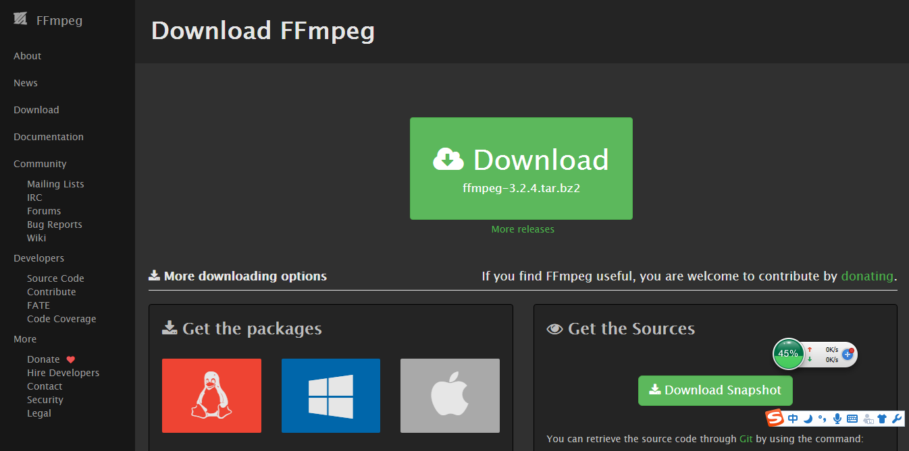
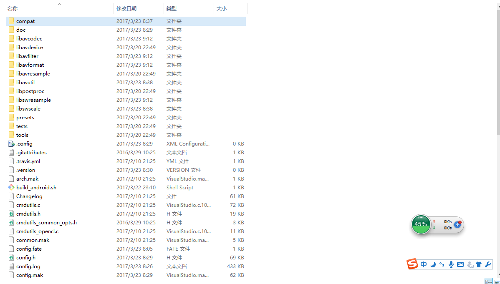
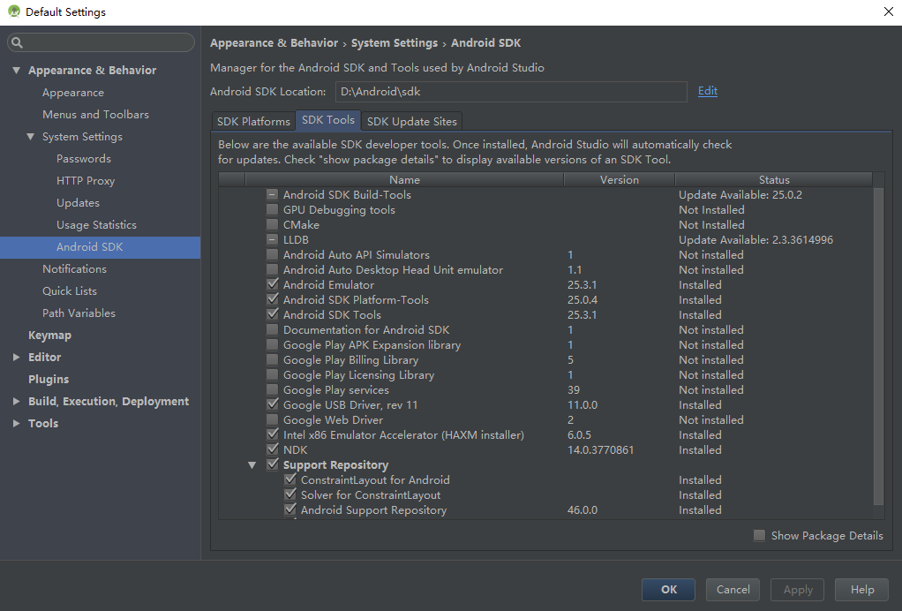
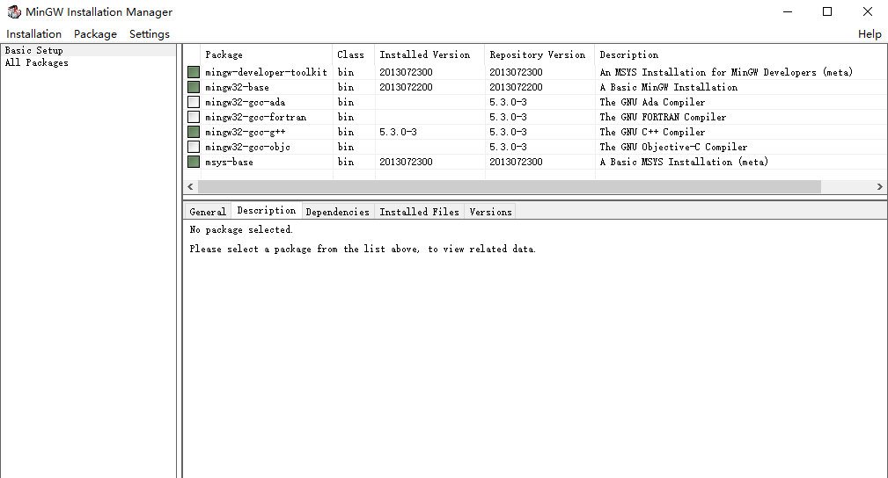
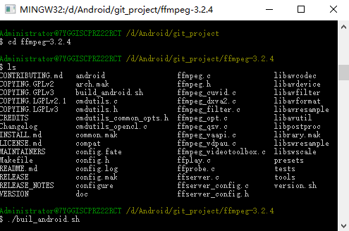
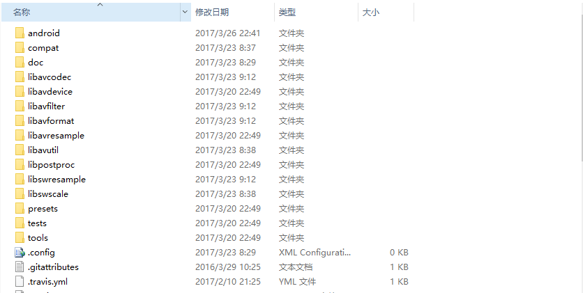
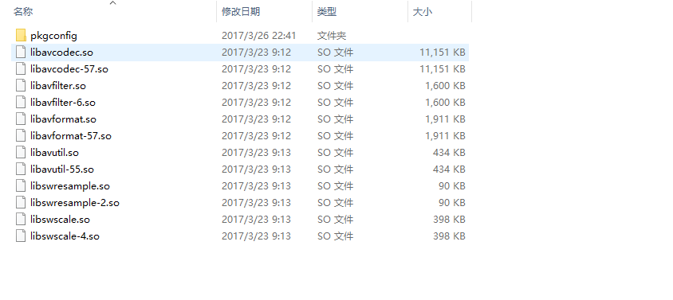

在linux下编译FFmpeg很方便，但在Windows下还是有不少坑的，试了下使用Windows+MinGW编译FFmpeg，过程还是挺顺利的。记录一下(这里针对的平台是Android)。
下载FFmpeg源码
首先，去FFmpeg官网下载源码。

然后解压至任意盘中，解压之后的目录如下。

NDK下载
下载NDK可以通过Android Studio自带的SDK管理工具来进行下载。也可以自行去官网下载解压。

MinGW下载配置
MinGW - Minimalist GNU for Windows-是Windows下模拟Linux运行的库、头文件等的集合。我们编译FFmpeg源码需要用到它。
点击这里直接下载安装程序，安装过程时长视网速而定。
安装完成后，打开MinGW Installation Manager,选中Basic Setup，在右边的package中选中如下几项：

然后点击Installation->Apply Changes,过一会就ok了。
到这里，我们的准备工作已经完成了。
编译
在之前FFmpeg解压后的文件夹中找到configure文件，将其中的这段代码：
1 2 3 4
| SLIBNAME_WITH_MAJOR='$(SLIBNAME).$(LIBMAJOR)' LIB_INSTALL_EXTRA_CMD='$$(RANLIB) "$(LIBDIR)/$(LIBNAME)"' SLIB_INSTALL_NAME='$(SLIBNAME_WITH_VERSION)' SLIB_INSTALL_LINKS='$(SLIBNAME_WITH_MAJOR) $(SLIBNAME)'
|
替换为：
1 2 3 4
| SLIBNAME_WITH_MAJOR='$(SLIBPREF)$(FULLNAME)-$(LIBMAJOR)$(SLIBSUF)' LIB_INSTALL_EXTRA_CMD='$$(RANLIB) "$(LIBDIR)/$(LIBNAME)"' SLIB_INSTALL_NAME='$(SLIBNAME_WITH_MAJOR)' SLIB_INSTALL_LINKS='$(SLIBNAME)'
|
这段代码是控制将来编译生成so库的命名格式，如果按照原来的命名格式编译出来将会是libavcodec.so.57这样的格式，android不能识别，改过之后为libavcodec-57.so，这样就可以了。
然后在FFmpeg解压后的目录中新建build_android.sh文件，内容如下：
1 2 3 4 5 6 7 8 9 10 11 12 13 14 15 16 17 18 19 20 21 22 23 24 25 26 27 28 29 30 31 32 33 34
| #!/bin/bash NDK=D:/Android/sdk/ndk-bundle SYSROOT=$NDK/platforms/android-21/arch-arm/ TOOLCHAIN=$NDK/toolchains/arm-linux-androideabi-4.9/prebuilt/windows-x86_64 function build_one { ./configure \ --prefix=$PREFIX \ --enable-shared \ --disable-static \ --disable-doc \ --disable-ffmpeg \ --disable-ffplay \ --disable-ffprobe \ --disable-ffserver \ --disable-avdevice \ --disable-doc \ --disable-symver \ --cross-prefix=$TOOLCHAIN/bin/arm-linux-androideabi- \ --target-os=linux \ --arch=arm \ --enable-cross-compile \ --sysroot=$SYSROOT \ --extra-cflags="-Os -fpic $ADDI_CFLAGS" \ --extra-ldflags="$ADDI_LDFLAGS" \ $ADDITIONAL_CONFIGURE_FLAG make clean make make install } CPU=arm PREFIX=$(pwd)/android/$CPU ADDI_CFLAGS="-marm" build_one
|
注意要把NDK的位置改为自己本地NDK的位置。然后双击运行 MinGW安装目录\msys\1.0\msys.bat 文件，启动MinGW命令行，切换到FFmpeg目录下，运行build_android.sh脚本，开始编译：

编译过程有点慢，这个跟电脑的速度有关。大概半小时后，编译完成，FFmpeg目录下多了一个android文件夹：

打开android->arm->lib:

编译成功。至于集成到Android平台，可以查阅官方API文档，通过JNI方式调用相关接口即可。
FFmpeg功能十分强大，很多音视频处理的工作都会用到它，以后还需要深入研究。